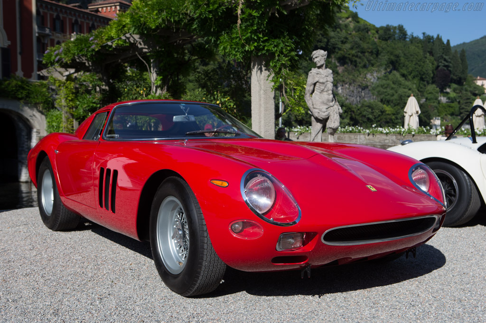

Ferrari 250 GTO
Ferrari 250 GTO არის ერთ-ერთი ყველაზე ლეგენდარული და იშვიათი ავტომობილი ავტოისტორიაში. მისი ღირებულება დღეს ასტრონომიულია და კოლექციონერებში ოქროს ფასად ფასდება.🔥ზოგადი ინფორმაცია
Ferrari 250 GTO — ერთ-ერთი ყველაზე ლეგენდარული, პრესტიჟული და ძვირადღირებული ავტომობილი ისტორიაში. გამოიცემოდა 1962–1964 წლებში და შექმნილი იყო მხოლოდ 36 ცალი. GTO ნიშნავს „Gran Turismo Omologato“ — რაც იტალიურად ნიშნავს გრან ტურზე შესაბამისს— ანუ 250 GTO იყო სპეციალურად სპორტული მანქანა, რომელსაც შეეძლო გამოყენება როგორც გზაზე, ისე რბოლებზე. მისი ძრავა არის 3.0 ლ V12 რაც 1960-იან წლებში იყო შესანიშნავი ძრავა. მის აეროდინამიკას და კონსტრუქციას ჰქონდა დიდი მნიშვნელობა: საბაზო მონაცემებით, GTO-ს მაქსიმალური სიჩქარე იყო 280 კმ/სთ. მისი ღირებულება $52-$70 მილიონ დოლარს შეადგენს.შეიტყვეთ მეტი

🏁სპორტული ისტორია
Ferrari 250 GTO შეიქმნა რომ ეთამაშა GT კლასის რბოლებში, განსაკუთრებით 24 Hours of Le Mans-ზე. მან მოიგო უამრავი ტურნირი, მაგალითად: Tour de France Automobile – 1963, GT World Titles – 1962–1964, ლე მანსში და სხვა რბოლებში. მანქანა გამოირჩეოდა aerodynamics-ით, ნაშთების მინიმალური წონით და საოცარი ბალანსით.
| მახასიათებელი | ინფორმაცია |
| ძრავი | 3.0L V12 Colombo |
| სიმძლავრე | ~300 ცხ.ძ 7500 RPM |
| ბრუნვა | ~294 Nm |
| გადამცემთა კოლოფი | 5-საფეხურიანი მექანიკური |
| წონა | ~880–950 კგ |
| 0–100 km/h | ~5.4 წამი |
| მაქს. სიჩქარე | დაახლოებით 280–290 km/h |